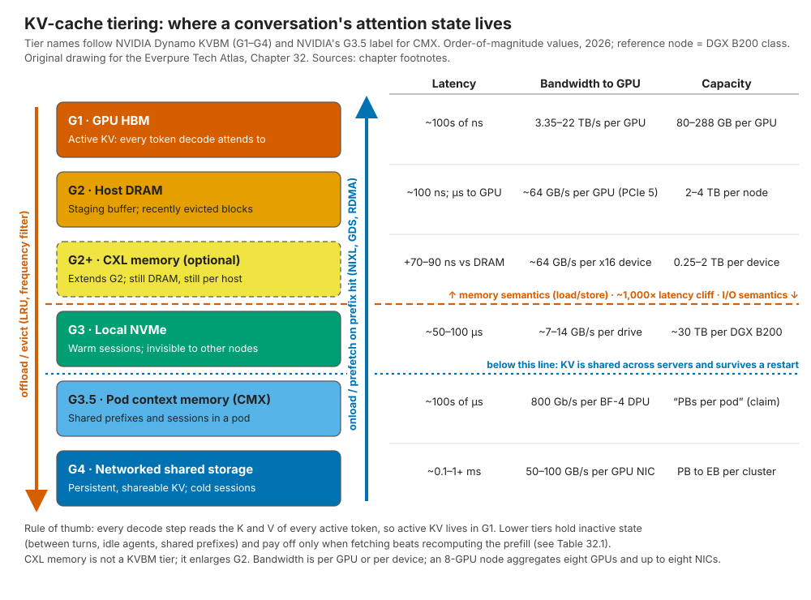

32. Inference and KV cache¶
Depth: L2 · Reading time: ~11 min · Last verified: 2026-11-01 Prerequisites: Media physics · The GPU data path · Interfaces and emerging tech (CXL) · Training storage
TL;DR¶
- The KV cache is a conversation's working memory: the attention keys and values of every token so far. A Llama 3.1 70B-class model needs 320 KiB per token, so one 128K-token session is about 43 GB; a fleet of retained sessions reaches petabytes.
- Prefill is compute-bound; decode is memory-bound. Decode rereads the whole cache for every new token, so active KV must sit in HBM. Storage can only hold KV that is not being decoded right now.
- It is a recompute-or-fetch trade. Rebuilding a 128K context costs an 8-GPU node ~2.6 s of compute; fetching it over 8 × 400 Gb/s NICs takes ~0.13 s. Fetching wins above roughly 2–5 GB/s per GPU, so hit rate and bandwidth decide the economics.
- NVIDIA has standardized the hierarchy. Dynamo's KV Block Manager (KVBM) defines tiers G1 (HBM) to G4 (networked storage), NIXL moves the bytes, and BlueField-4 STX/CMX adds a pod-level "G3.5" flash tier. Storage vendors, Everpure included, compete to be the G3.5/G4 backend.
- Discount the multipliers. Everpure, WEKA, DDN and HPE each claim 20× or more faster time to first token, mostly against a no-cache baseline; VAST and NVIDIA claim power and throughput gains instead. MLPerf Storage v3.0 (September 2026) added the first neutral KV-cache test1.
Why this matters for Everpure strategy¶
Training storage is a one-time sale per cluster; inference spending recurs, and KV caching is the first inference workload that needs shared-storage capacity and bandwidth on every user request. If a cache tier lets a GPU fleet serve more conversations per GPU, storage is paid for out of the GPU budget, the most persuasive argument a storage vendor has (Chapter 11). Everpure has entered with PureKVA on FlashBlade, led the MLPerf Storage v3.0 KV-cache runs it entered2 (company-stated) and is a named partner in NVIDIA's BlueField-4 STX architecture3.
The risk is equally direct. NVIDIA is defining the tier (names, software, and now a reference rack, CMX), in which storage can become a commodity flash shelf behind NVIDIA's DPUs. The strategic question: is KV cache a new socket for Everpure, or a feature that NVIDIA, local NVMe and leaner model architectures will absorb?
Core concepts¶
What the KV cache is, and how big it gets¶
A transformer generates one token at a time. At each step, every layer's attention compares the new token's query with the keys of all earlier tokens and blends their values. Caching each token's K and V avoids recomputing the whole history every step. The cost is memory:
KV bytes per token = 2 (K and V) × layers × KV heads × head dimension × bytes per value.
Llama 3.1 70B has 80 layers and uses grouped-query attention (GQA): 64 query heads share 8 KV heads, each of dimension 128 (8,192 ÷ 64)4. At fp16 that gives 2 × 80 × 8 × 128 × 2 = 327,680 bytes (320 KiB) per token. Llama 3.1 405B (126 layers, 8 KV heads) needs 504 KiB per token. DeepSeek-V3 uses multi-head latent attention (MLA). It caches one compressed 512-wide latent plus a 64-wide positional key per layer, so 61 layers come to about 69 KiB per token despite 671B parameters5. Without GQA, the 70B model would need 8× more (2.5 MiB per token). Model architects keep shrinking KV, and any storage pitch has to survive that.
![Two-panel chart. Panel A plots KV cache per session against context length from 8K to 1M tokens on log axes for DeepSeek-V3 (68.6 KiB per token), Llama 3.1 8B (128 KiB), Llama 3.1 70B (320 KiB) and Llama 3.1 405B (504 KiB), with reference lines for one B200 GPU's 180 GB of HBM and an 8-GPU node's 1,440 GB. A 70B session reaches 43 GB at 128K and 344 GB at 1M. Panel B shows the total KV for 1 to 100,000 retained 128K-token Llama 3.1 70B sessions, rising from 43 GB to 4.3 PB, against one node's HBM, DRAM and local NVMe capacity.](../../assets/charts/ch32-kv-size.svg)
Figure 32.1 — Worked example: KV size is linear in context and in sessions, so a few hundred retained long conversations already exceed everything one 8-GPU node holds.
Data: data/ch32_kv_size.csv
Compare the hardware. An H200 has 141 GB of HBM6; a Rubin GPU has 288 GB of HBM47. A DGX B200 node has 1,440 GB of HBM, 2 TB of host DRAM and 8 × 3.84 TB of local NVMe8. After 71 GB of fp8 weights for a 70B model, ~1.37 TB remains for KV: about 31 sessions at 128K, fewer after activations (fp8 KV doubles it).
Prefill versus decode: two different machines¶
flowchart LR
P["Prompt: system prompt, documents, chat history"] --> PF["PREFILL: all prompt tokens in parallel<br/>compute-bound, high FLOPs per byte"]
PF --> KV[("KV cache in HBM")]
PF --> T1["First token: TTFT ends here"]
T1 --> DC["DECODE: one token per step<br/>reads all weights and all KV every step"]
KV --> DC
DC -->|"appends K,V per new token"| KV
DC --> OUT["Streamed answer: inter-token latency"]Figure 32.2 — Prefill creates the KV cache in one compute-heavy burst; decode then rereads it once per generated token, which is why active KV must live in the fastest memory.
Prefill processes the whole prompt at once, matrix-multiply heavy and near the compute roofline; its latency is time to first token (TTFT). Decode produces one token per step, and each step reads the weights and the entire KV cache of every sequence in the batch: the low-arithmetic-intensity, memory-bound corner of a roofline plot. A worked example: 16 sessions at 128K on a 70B model hold 687 GB of KV. Spread across eight B200s, each GPU reads ~86 GB of KV per step, about 11 ms at B200's 8 TB/s of HBM bandwidth8. Reading the weights takes only ~1 ms. At long context, KV bytes set decode speed and HBM capacity caps batch size. Streaming that 86 GB from a 50 GB/s link would take 1.7 s per token. Hence the hard limit: storage holds inactive KV (between turns, while an agent waits on a tool, or a shared prefix not yet in use), never the working set.
Because the phases want different hardware, disaggregated serving runs prefill and decode on separate GPU pools and ships the KV cache between them, an idea published in 2024 as DistServe (OSDI)9 and Splitwise (ISCA)10. Moonshot AI's Mooncake (serving Kimi) pooled KV on spare CPU DRAM and SSDs and won Best Paper at USENIX FAST 2025, subtitled "trading more storage for less computation"11. Disaggregation turns KV from a private GPU buffer into data that crosses the network, where storage vendors operate.
Prefix caching: the hit-rate game¶
Requests often share a beginning (system prompt, document, repository, earlier turns). Prefix caching stores KV in fixed-size blocks keyed by a hash of the tokens up to that block, so a new request reuses the longest matching prefix and prefills only new tokens. vLLM's PagedAttention (SOSP 2023) enabled this by paging KV like virtual memory, cutting fragmentation waste and raising throughput 2–4×12. SGLang's RadixAttention extended the idea to a prefix tree13.
The semiconductor bridge is direct: the block hash is a cache tag, eviction is LRU with a frequency filter, and average access time is hit rate × fetch time + miss rate × recompute time. The quirk is that misses are recomputable: losing a block costs time and money, never correctness, so durability matters far less than throughput and tail latency. Hit rates are fragile: context truncation can halve them14, and a model update invalidates the entire cache.
Recompute or fetch: the break-even¶
Worked example (128K-token context, Llama 3.1 70B, 8-GPU B200-class node). Recompute needs about 2 × 70.6×10⁹ × 131,072 ≈ 1.85×10¹⁶ FLOPs for the linear layers, plus about 2.25×10¹⁶ for causal attention (2 × n² × 8,192 × 80 layers), so ≈ 4.1×10¹⁶ FLOPs. Assume the node delivers 16 PFLOPS (2 PFLOPS per GPU, an assumption well below peak). Recompute then takes ≈ 2.6 s and ≈ 21 GPU-seconds. Fetching 43 GB over eight 400 Gb/s NICs at ~80% efficiency (320 GB/s) takes ≈ 0.13 s with the GPUs free. A 70B model spends 0.5–1 million FLOPs to recreate each byte of KV, so at 2 PFLOPS per GPU fetching wins above ~2–5 GB/s per GPU: a low bar for RDMA flash, and why KV offload works at all.

Figure 32.3 — The KV hierarchy is a cache hierarchy with a ~1,000× latency cliff between memory and flash; storage vendors compete below the cliff, where capacity and sharing matter more than nanoseconds.
| Path for a 128K-context hit (70B, 43 GB) | Time to restore | GPU time burned | Capacity at that tier (one node) | Cost to hold 43 GB for 1 hour |
|---|---|---|---|---|
| Miss: recompute prefill | ≈ 2.6 s | ≈ 21 GPU-s (≈ US$0.02 at US$4/GPU-h, assumed) | n/a | n/a |
| G2 host DRAM over PCIe 5 (~440 GB/s per node) | ≈ 0.1 s | ~0 | 2–4 TB → ~45–90 sessions | ≈ US$0.01 (DRAM at ~US$10/GB, 4-yr life, assumed) |
| G3 local NVMe (8 drives, ~56 GB/s) | ≈ 0.8 s | ~0 | ~31 TB → ~700 sessions, this node only | ≈ US$0.0006 (flash system at ~US$0.50/GB, assumed) |
| G3.5 / G4 networked flash (~320 GB/s to the node) | ≈ 0.13 s + lookup | ~0 | PB per pod or cluster, any node | ≈ US$0.0006 plus network and software |
| Miss on a 1M-token context (343 GB) | ≈ 100 s recompute (attention dominates) | ≈ 800 GPU-s | ~4 sessions per node's HBM after weights; exceeds one GPU's 180 GB | n/a |
Table 32.1 — Worked example, not vendor data: one recompute costs about as much as holding the same KV in DRAM for two hours or on flash for ~40 hours, so the economics come down to hit rate and fetch bandwidth.
Three conclusions. First, eight 400G NICs out-run eight local U.2 drives, which is why NVIDIA put its context tier on Ethernet. Second, DRAM and CXL memory win on speed for the hottest evicted blocks but cost ~20× more per GB-hour; Synopsys claims CXL offloads KV 3.6× faster than SSDs15 (vendor claim), but the test is tokens per dollar. Third, the shared tier's main advantage is invisible per node: any GPU can hit any session's prefix, so the router can send a returning user to whichever node is free.
Why long context and agents turn KV into a storage problem¶
Agents are long and stop-start. A coding agent that runs 50 turns, growing to 100K tokens and waiting seconds to minutes on tools between turns, would re-prefill its history every turn without a cache: about 50 × 50K ≈ 2.5 million prefill tokens, 25× the work with perfect reuse. Across thousands of agents the retained state is the right-hand side of Figure 32.1: tens of TB to PB, reused within minutes, recomputable but expensive to lose. That is the profile of a shared flash cache. TrendForce attributes part of 4Q26 enterprise SSD demand to QLC purchases for KV cache16. DeepSeek moved its API cache to disk in 2024, pricing hits at one-tenth of a miss, and reported that first-token latency on a heavily reused 128K prompt fell from 13 s to about 0.5 s17 (company-stated). Anthropic bills cache reads at 0.1× the base input price18. Prompt-cache pricing is the market's own valuation of a KV hit.
The software stack: Dynamo, KVBM, NIXL, LMCache, llm-d¶
NVIDIA unveiled Dynamo, its open-source distributed inference framework, at GTC on 2025-03-1819 and declared it production-ready (1.0) on 2026-03-1620. It does KV-aware routing and disaggregated serving across TensorRT-LLM, vLLM and SGLang. Its KVBM tiers KV blocks across G1 (HBM), G2 (host DRAM), G3 (local SSD) and G4 (remote storage, treated as an opaque blob store), with disk I/O through NIXL and GPUDirect Storage where available21. To spare SSD endurance, recent versions write a block from DRAM to disk only after it has been reused at least twice (a version-dependent default)22. NIXL, the transfer library underneath, has plug-in backends (UCX/RDMA, POSIX, GDS, object, vendor); that socket is where storage vendors integrate23.
sequenceDiagram
participant U as User or agent
participant R as Dynamo router
participant W as GPU worker
participant K as KVBM
participant S as G3 or G4 tier
U->>R: request with long shared prefix
R->>K: hash prefix blocks and look up
alt prefix found in G3 or G4
K->>S: locate blocks
S-->>W: NIXL transfer via RDMA or GDS into HBM
W->>W: prefill only the new tokens
else miss
W->>W: full prefill recompute
W->>K: register new blocks
K->>S: offload later if reused
end
W-->>U: first token then decode stream
Note over W,S: active decode KV stays in HBM throughoutFigure 32.4 — On a hit, the expensive step becomes a bulk DMA from flash into HBM; on a miss, the GPU recomputes and the new blocks become tomorrow's hits.
Open-source layers keep the tier vendor-neutral. LMCache moves KV from vLLM and SGLang into shared tiers; its authors report up to 15× throughput on multi-round and document workloads14. vLLM itself now offloads to host memory, storage and remote peers24. llm-d, launched in May 2025 by Red Hat, Google Cloud, IBM Research, CoreWeave and NVIDIA and a CNCF Sandbox project since March 2026, brings KV-aware scheduling to Kubernetes25. A vendor supporting NIXL, LMCache and llm-d reaches nearly every serving stack.
Where storage vendors can, and can't, add value¶
Can: capacity at flash cost; a namespace shared across nodes (higher hit rates, free routing); persistence across restarts; tenant isolation and encryption of sensitive user context; and bandwidth to feed hundreds of GPUs (FlashBlade//EXA's MLPerf v3.0 entry read KV at 1,623.4 GiB/s on 51 hosts26, vendor-submitted; the standard-scale leaders, UBIX and FarmGPU, posted ~444 GiB/s on much smaller configurations, so compare per host, not headline). Can't: touch the decode loop; beat DRAM or CXL for blocks reused within seconds; charge for durability on recomputable data; or stop model-side shrinkage (MLA, fp8/fp4 KV, hybrid attention), which moves the break-even toward local memory. The defensible position is the shared, pod-to-cluster tier: too big for DRAM, too shared for local NVMe.
How Everpure approaches it vs. competitors¶
| Vendor | Offering | Integration path | Headline claim (vendor claim) | Caveat |
|---|---|---|---|---|
| Everpure | PureKVA on FlashBlade (S3 and NFS); EXA for scale | vLLM and Dynamo; RDMA pre-staging into GPU memory27 | Up to 20× faster TTFT; DeepReduce always-on; availability announced for October 202628 | Test details unpublished; MLPerf v3.0 KV results are its neutral data point2 |
| WEKA | Augmented Memory Grid on NeuralMesh | RDMA + GDS; open-sourced NIXL plugin; GA 2025-11-18, OCI launch partner29 | "1000×" GPU memory extension; up to 20× lower TTFT29 | Longest commercial track record; NeuralMesh 6 claims lack a reproducible method30 |
| VAST Data | VUA (open source, Apr 2025); CNode software on BlueField-4 (CES 2026) | vLLM, LMCache, Dynamo31 | 75% lower power for KV operations; hardware 2H 202632 | Strongest fit with NVIDIA's DPU-centric CMX design |
| DDN | KV cache on Infinia and EXAScaler via Dynamo/NIXL | Dynamo-integrated since June 202633 | Up to 55× faster KV loading (2026); 27× faster, 75% lower input-token cost (2025)3334 | Multipliers vary widely by baseline |
| HPE | Alletra MP X10000 KV offload | Kamiwaza-validated test on H20035 | Up to 20× faster TTFT, 17× effective throughput35 | Sponsored content |
| NVIDIA | BlueField-4 STX / CMX "G3.5" tier | Native to Dynamo, Spectrum-X, BlueField-4336 | 5× tokens/s and 5× power efficiency vs traditional storage37 | Defines the socket; partners supply software and flash |
Table 32.2 — Every claim here is vendor-reported, most against a no-cache baseline; comparable numbers exist only in MLPerf Storage v3.0.
Steelmanning the alternatives. WEKA moved first (AMG at GTC 2025, OCI as launch partner) and has production references Everpure is still building. VAST running its software on the BlueField-4 DPU inside GPU servers fits NVIDIA's CMX blueprint most closely, which can decide NVIDIA-led deals (Chapter 34). The simplest rival is the "free" one: a DGX already ships with ~31 TB of local NVMe, and LMCache can use it at no extra licence cost.
Everpure's case. PureKVA reuses FlashBlade's existing shared, multi-tenant, high-bandwidth position rather than adding a silo, and its MLPerf v3.0 KV results are benchmark evidence, not a marketing multiplier, though WEKA, VAST and DDN did not enter that round26. Options a strategy team might evaluate, based on public information: an upstream NIXL backend and LMCache/llm-d connectors so PureKVA reaches every serving stack; positioning EXA as the software layer for STX/CMX racks rather than a rival to them; and pricing KV capacity by GB-hour or tokens served, as inference buyers already price cache hits.
History and trajectory¶
timeline
title KV cache becomes a storage workload
2023 : vLLM PagedAttention pages KV like virtual memory
2024 : Disaggregated prefill and decode papers : SGLang RadixAttention : DeepSeek moves API context cache to disk
2025 : Mooncake wins FAST best paper : Dynamo and NIXL launched : WEKA AMG announced then GA : VAST open-sources VUA : llm-d launched : Pure KVA integrates Dynamo
2026 : NVIDIA context memory storage at CES : Dynamo 1.0 and BlueField-4 STX with CMX : DDN KV cache on Infinia : MLPerf Storage v3.0 adds KV cache : PureKVA announcedFigure 32.5 — In three years KV cache went from a GPU memory-management trick to a named storage tier with a reference rack and a benchmark.
Three forces point forward. Standardization: NVIDIA named the tiers and shipped the library and a rack; MLCommons defined a test. Commoditization: with NIXL as the interface, backends are interchangeable unless they differ on throughput, sharing or price. Model-side shrinkage: MLA-style compression and low-precision KV cut bytes per token 4–10× while contexts and agent counts rise. Whether total KV demand outruns the shrinkage decides if this tier becomes a revenue line or stays a feature (Chapter 53).
Numbers that matter¶
| Metric | Value | Context | Source / date |
|---|---|---|---|
| KV per token, Llama 3.1 70B (fp16) | 320 KiB | 80 layers × 8 KV heads × 128 × 2 × 2 B | Worked example from config4 |
| KV per token, DeepSeek-V3 (MLA) | ~69 KiB | 61 layers × 576 values × 2 B | Worked example from config5 |
| One 128K-token 70B session | ≈ 43 GB | ≈ 31 sessions fill a DGX B200's HBM after weights | Worked example |
| DGX B200 memory tiers | 1,440 GB HBM; 2 TB DRAM; 30.7 TB NVMe | Reference node for G1–G3 | NVIDIA spec8 |
| Recompute vs fetch, 128K context | ≈ 2.6 s vs ≈ 0.13 s | 16 PFLOPS delivered vs 320 GB/s fetch | Worked example |
| Fetch break-even bandwidth | ~2–5 GB/s per GPU | Below this, recompute is faster | Worked example |
| DeepSeek disk cache | Hit priced at 1/10 of miss; 13 s → 0.5 s TTFT on a 128K prompt | Company-stated, 2024 | DeepSeek, 2024-08-0217 |
| FlashBlade//EXA MLPerf v3.0 KV | 85,736 tok/s (8B); 33,403 tok/s (70B); 1,623.4 GiB/s read | Company-reported; v3.0 simulates B200s | Everpure / StorageReview, 2026-09226 |
| NVIDIA CMX claim | 5× tokens/s, 5× power efficiency | vs "traditional storage"; vendor claim, made at CES for the platform since branded CMX | NVIDIA, 2026-0137 |
Conversation playbook¶
Questions for a PM
- "What hit rate and context length does PureKVA's 20× TTFT figure assume, and what is the baseline: recompute, local NVMe or LMCache on DRAM?" Strong: model, context, concurrency and baseline, plus where the benefit vanishes (short contexts, low reuse).
- "Are we a supplier to NVIDIA's CMX racks, a competitor to them, or the G4 tier behind them?" Strong: a position per NVIDIA deal type and what Everpure adds beyond a BlueField-4 flash shelf (sharing, tenancy, operations).
- "How would we price a KV tier: per TB, per GB-hour or per token served?" Strong: anchors price to the customer's recompute cost, visible in API prompt-cache pricing.
Questions for an engineer
- "What restore bandwidth per GPU, and what p99 latency per KV block, does PureKVA deliver at 1,000 concurrent sessions?" Strong: GB/s per GPU well above the ~2–5 GB/s break-even, block size, and tail latency under mixed offload and onload.
- "What happens to the cache when the model is updated or a node restarts?" Strong: model version in the cache key, invalidation, warm-up, and loss meaning recompute, not data loss.
- "Do we have an upstream NIXL backend, and does PureKVA work with LMCache and llm-d without our own client?" Strong: names the plugin, upstream status and supported engine versions.
Don't say this:
- "Storage extends GPU memory." It holds inactive KV; decode rereads every active token each step and cannot run from flash.
- "KV cache needs enterprise-grade durability." It is recomputable. Value comes from throughput, sharing and cost per GB-hour, not eleven nines.
- "Local NVMe is enough." Sometimes, but only its own node sees it, which caps hit rates; it also restores slower than eight 400G NICs.
- "20× faster TTFT" without stating the baseline, context length and hit rate.
- "CXL solves this." CXL memory is DRAM at DRAM prices: faster, but roughly 20× the GB-hour cost of flash.
Going deeper (optional, L3 pointers)¶
- Dynamo's KVBM design document21 and the NIXL repository23.
- Mooncake (FAST 2025), the reference production design for a disaggregated KV pool11.
- PagedAttention12 and the LMCache paper on cross-engine sharing and hit-rate pitfalls14.
- MLCommons
kv_cache_benchmarkREADME: three closed workloads (Llama 3.1 8B with 200 users; 8B with 100 users plus 4 GB CPU memory; 70B with 70 users), scored on tokens/s, GiB/s and p95 read latency38.
Key terms¶
- KV cache — stored per-token attention keys and values.
- Prefill / decode — compute-bound prompt phase; memory-bound generation phase.
- TTFT — time to first token.
- Prefix caching — reusing KV for identical leading tokens.
- GQA / MLA — attention designs that shrink KV per token.
- KVBM, NIXL, CMX — Dynamo's tier manager, transfer library, pod context-memory tier.
- See the glossary for the rest.
Sources¶
-
MLCommons via GlobeNewswire, "MLCommons Releases New MLPerf Storage v3.0 Benchmark Results," 2026-09-01. https://www.globenewswire.com/news-release/2026/09/01/3354412/0/en/mlcommons-releases-new-mlperf-storage-v3-0-benchmark-results.html (retrieved 2026-11-01). ↩
-
Everpure Blog, "Everpure FlashBlade//EXA Tops MLPerf Storage v3.0 Checkpointing and KV cache Benchmarks," 2026-09. https://blog.everpuredata.com/purely-technical/everpure-flashblade-exa-tops-mlperf-storage-v3-benchmarks/ (retrieved 2026-11-01). ↩↩↩
-
NVIDIA Investor Relations, "NVIDIA Launches BlueField-4 STX Storage Architecture With Broad Industry Adoption," 2026-03-16. https://investor.nvidia.com/news/press-release-details/2026/NVIDIA-Launches-BlueField-4-STX-Storage-Architecture-With-Broad-Industry-Adoption/default.aspx (retrieved 2026-11-01). ↩↩
-
Meta,
llama-modelsrepository, "models/sku_list.py" (Llama 3.1 8B/70B/405B architecture arguments: dim, n_layers, n_heads, n_kv_heads), n.d. https://github.com/meta-llama/llama-models/blob/main/models/sku_list.py (retrieved 2026-11-01). ↩↩ -
DeepSeek-AI,
DeepSeek-V3repository, "inference/configs/config_671B.json" (n_layers 61, kv_lora_rank 512, qk_rope_head_dim 64), n.d. https://github.com/deepseek-ai/DeepSeek-V3/blob/main/inference/configs/config_671B.json (retrieved 2026-11-01). ↩↩ -
NVIDIA, "NVIDIA H200 Tensor Core GPU," product page, n.d. (141 GB HBM3e, 4.8 TB/s). https://www.nvidia.com/en-us/data-center/h200/ (retrieved 2026-11-01). ↩
-
Tom's Hardware, "Nvidia launches Vera Rubin NVL72 AI supercomputer at CES, promises up to 5x greater inference performance and 10x lower cost per token than Blackwell, coming 2H 2026," 2026-01. https://www.tomshardware.com/pc-components/gpus/nvidia-launches-vera-rubin-nvl72-ai-supercomputer-at-ces-promises-up-to-5x-greater-inference-performance-and-10x-lower-cost-per-token-than-blackwell-coming-2h-2026 (retrieved 2026-11-01). ↩
-
NVIDIA, "NVIDIA DGX B200," product page, n.d. (1,440 GB GPU memory, 64 TB/s aggregate HBM bandwidth; 2 TB system memory configurable to 4 TB; 8 × 3.84 TB NVMe U.2; 8 × ConnectX-7 up to 400 Gb/s). https://www.nvidia.com/en-us/data-center/dgx-b200/ (retrieved 2026-11-01). ↩↩↩
-
Y. Zhong et al., "DistServe: Disaggregating Prefill and Decoding for Goodput-optimized Large Language Model Serving," USENIX OSDI 2024. https://www.usenix.org/conference/osdi24/presentation/zhong-yinmin (retrieved 2026-11-01). ↩
-
P. Patel et al., "Splitwise: Efficient Generative LLM Inference Using Phase Splitting," ISCA 2024 (arXiv:2311.18677). https://arxiv.org/abs/2311.18677 (retrieved 2026-11-01). ↩
-
R. Qin et al., "Mooncake: Trading More Storage for Less Computation — A KVCache-centric Architecture for Serving LLM Chatbot," USENIX FAST 2025 (Best Paper). https://www.usenix.org/conference/fast25/presentation/qin (retrieved 2026-11-01). ↩↩
-
W. Kwon et al., "Efficient Memory Management for Large Language Model Serving with PagedAttention," ACM SOSP 2023 (arXiv:2309.06180). https://arxiv.org/abs/2309.06180 (retrieved 2026-11-01). ↩↩
-
L. Zheng et al., "SGLang: Efficient Execution of Structured Language Model Programs," NeurIPS 2024 (arXiv:2312.07104). https://arxiv.org/abs/2312.07104 (retrieved 2026-11-01). ↩
-
Y. Cheng et al., "LMCache: An Efficient KV Cache Layer for Enterprise-Scale LLM Inference," arXiv:2510.09665, 2025-10 (rev. 2025-12; MLSys 2026). https://arxiv.org/abs/2510.09665 (retrieved 2026-11-01). ↩↩↩
-
StorageReview, "Synopsys CXL 4.0 IP hits 128 GT/s, claims 3.6x KV cache offload over SSDs," 2025-12. https://www.storagereview.com/news/synopsys-cxl-4-0-ip-hits-128-gt-s-claims-3-6x-kv-cache-offload-over-ssds (retrieved 2026-11-01). ↩
-
TrendForce, "AI Server Demand Sustains Memory Contract Price Increases in 4Q26, While Consumer-Side Pressure Persists," 2026-09-30. https://www.trendforce.com/presscenter/news/20260930-13258.html (retrieved 2026-11-01). ↩
-
DeepSeek, "DeepSeek API introduces Context Caching on Disk," 2024-08-02. https://api-docs.deepseek.com/news/news0802 (retrieved 2026-11-01); corroborated by S. Willison, "DeepSeek API context caching," 2024-08-14. https://simonwillison.net/2024/Aug/14/deepseek-context-caching/ (retrieved 2026-11-01). ↩↩
-
Anthropic, "Prompt caching," Claude developer documentation, n.d. https://docs.claude.com/en/docs/build-with-claude/prompt-caching (retrieved 2026-11-01). ↩
-
NVIDIA Newsroom, "NVIDIA Dynamo Open-Source Library Accelerates and Scales AI Reasoning Models," 2025-03-18. https://nvidianews.nvidia.com/news/nvidia-dynamo-open-source-library-accelerates-and-scales-ai-reasoning-models (retrieved 2026-11-01). ↩
-
NVIDIA Newsroom, "NVIDIA Enters Production With Dynamo, the Broadly Adopted Inference Operating System for AI Factories," 2026-03-16. https://nvidianews.nvidia.com/news/dynamo-1-0 (retrieved 2026-11-01). ↩
-
NVIDIA, "KVBM design," Dynamo documentation v1.3.0, n.d. https://docs.nvidia.com/dynamo/v1.3.0/design-docs/component-design/kvbm-design.md (retrieved 2026-11-01). ↩↩
-
NVIDIA, "KV cache offloading" (KVBM guide), Dynamo documentation, n.d. https://docs.dynamo.nvidia.com/dynamo/user-guides/kv-cache-offloading (retrieved 2026-11-01). ↩
-
NVIDIA / ai-dynamo, "NIXL: NVIDIA Inference Xfer Library" (GitHub repository), n.d. https://github.com/ai-dynamo/nixl (retrieved 2026-11-01). ↩↩
-
vLLM Blog, "Tiered KV Cache Offloading in vLLM," 2026-09-10. https://vllm.ai/blog/2026-09-10-tiered-kv-offloading (retrieved 2026-11-01). ↩
-
CNCF Blog, "Welcome llm-d to the CNCF: evolving Kubernetes into SOTA AI infrastructure," 2026-03-24. https://www.cncf.io/blog/2026/03/24/welcome-llm-d-to-the-cncf-evolving-kubernetes-into-sota-ai-infrastructure/ (retrieved 2026-11-01). ↩
-
StorageReview, "MLPerf Storage v3.0: 877 GiB/s Checkpoints, a Cloud First, and a Leaderboard Turned Over," 2026-09. https://www.storagereview.com/news/mlperf-storage-v3-0-877-gib-s-checkpoints-a-cloud-first-and-a-leaderboard-turned-over (retrieved 2026-11-01). ↩↩↩
-
Pure Storage Blog, "Pure KVA Now Integrates with NVIDIA Dynamo for Scalable, Low-Latency LLM Inference," 2025. https://blog.purestorage.com/news-events/pure-kva-integrates-nvidia-dynamo-for-scalable-low-latency-llm-inference/ (retrieved 2026-11-01). ↩
-
Blocks & Files, "Everpure bulks up AI offer," 2026-09-30. https://blocksandfiles.com/flash/2026/09/30/everpure-bulks-up-ai-offer/5300162 (retrieved 2026-11-01); StorageReview, "Everpure Adds PureKVA to FlashBlade, Claims Up to 20x Faster Time to First Token, and Makes DeepReduce Always-On," 2026. https://www.storagereview.com/news/everpure-purekva-flashblade-20x-time-to-first-token-always-on-deepreduce (retrieved 2026-11-01). ↩
-
WEKA, "WEKA Breaks The AI Memory Barrier With Augmented Memory Grid on NeuralMesh," 2025-11-18. https://www.weka.io/news/weka-breaks-the-ai-memory-barrier-with-augmented-memory-grid (retrieved 2026-11-01). ↩↩
-
NAND Research, "WEKA NeuralMesh 6 and WEKApod 3: density, KV cache and AI economics," 2026-07. https://nand-research.com/weka-neuralmesh-6-and-wekapod-3-density-kv-cache-and-ai-economics/ (retrieved 2026-11-01). ↩
-
VAST Data, "Open and Undivided Attention," 2025-04. https://www.vastdata.com/blog/open-and-undivided-attention (retrieved 2026-11-01); Blocks & Files, "VAST's VUA flash caching virtually expands GPU server memory for AI token generation," 2025-04-25. https://blocksandfiles.com/2025/04/25/vasts-vua-flash-caching-virtually-expands-gpu-server-memory-for-ai-token-generation/ (retrieved 2026-11-01). ↩
-
StorageNewsletter, "CES 2026: Vast Data Redesigns AI Inference Architecture for the Agentic Era with Nvidia," 2026-01-07. https://www.storagenewsletter.com/2026/01/07/ces-2026-vast-data-redesigns-ai-inference-architecture-for-the-agentic-era-with-nvidia/ (retrieved 2026-11-01). ↩
-
Blocks & Files, "DDN launches faster array HW and KV cache SW for AI," 2026-06-24. https://www.blocksandfiles.com/ai-ml/2026/06/24/ddn-launches-faster-array-hw-and-kv-cache-sw-for-ai/5261447 (retrieved 2026-11-01). ↩↩
-
Blocks & Files, "DDN touts Infinia storage as key to faster, cheaper AI inference," 2025-07-19. https://www.blocksandfiles.com/data-management/2025/07/19/ddn-touts-infinia-storage-as-key-to-faster-cheaper-ai-inference/1603774 (retrieved 2026-11-01). ↩
-
Blocks & Files (Partner Content), "HPE puts storage to work on AI's expensive memory problem," 2026-10-29. https://www.blocksandfiles.com/ai-ml/2026/10/29/partner-content-hpe-puts-storage-to-work-on-ais-expensive-memory-problem/5305788 (retrieved 2026-11-01). ↩↩
-
NAND Research, "NVIDIA STX & CMX: Infrastructure for AI Context Storage (GTC 2026)," 2026-03. https://nand-research.com/nvidia-stx-cmx-infrastructure-for-agentic-ai-context-storage/ (retrieved 2026-11-01). ↩
-
NVIDIA Newsroom, "NVIDIA BlueField-4 Powers New Class of AI-Native Storage Infrastructure for the Next Frontier of AI," 2026-01-05. https://nvidianews.nvidia.com/news/nvidia-bluefield-4-powers-new-class-of-ai-native-storage-infrastructure-for-the-next-frontier-of-ai (retrieved 2026-11-01); NVIDIA Developer Blog, "Introducing NVIDIA BlueField-4-Powered Inference Context Memory Storage Platform for the Next Frontier of AI," 2026-01. https://developer.nvidia.com/blog/introducing-nvidia-bluefield-4-powered-inference-context-memory-storage-platform-for-the-next-frontier-of-ai/ (retrieved 2026-11-01). ↩↩
-
MLCommons,
storagerepository, "kv_cache_benchmark/README.md," n.d. https://github.com/mlcommons/storage/blob/main/kv_cache_benchmark/README.md (retrieved 2026-11-01). ↩